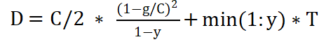

路口评价指标分析计算(HutbCarlaCity)¶
为支持 湖工商场景 (WindowsNoEditor) 高保正的十字路口三维建模，设计 traffic_indicators.py 脚本对路口交通流量、路口车均延误、路口饱和、排队长度四种路口真实性评价指标分析。
首先需要对场景中添加车辆，运行 generate_traffic.py 脚本，生成足够的车辆。
定义命令行参数并获取模拟世界对象¶
argparser = argparse.ArgumentParser(
description=__doc__)
argparser.add_argument(
'--host',
metavar='H',
default='127.0.0.1', #默认ip
help='IP of the host server (default: 127.0.0.1)')
argparser.add_argument(
'-p', '--port',
metavar='P', #端口号
default=2000,
type=int,
help='TCP port to listen to (default: 2000)')
args = argparser.parse_args()
client = carla.Client(args.host, args.port)
client.set_timeout(10.0) # 设置超时
world = client.get_world() # 获取世界对象
将路口定义为一个矩形区域，在Carla编辑器中得到相应坐标
# 路口坐标,
junctions = [
[-194, -372, 79, -34], #桐梓坡路-西二环路口
[449, 381, 48, -87] #桐梓坡路-望岳路口
]
# 用于跟踪已经计算的车辆id以及进入的时间
counted_vehicles = [
{},
{}
]
计算对应路口交通流量、车均延误、饱和度、排队长度¶
定义俩个全局变量
SATURATION = 32 # 路口最大容量
DWELL_TIME = 50 # 50秒后认为车辆已离开路口
路口交通流量函数get_traffic_flow()¶
def get_traffic_flow(world, junction, traffic_flows, i, counted_vehicles):
# 获取所有正在行驶的车辆列表
vehicle_list = world.get_actors().filter('vehicle.*')
# counted_vehicles = {} 是一个字典
current_time = world.get_snapshot().timestamp.elapsed_seconds
# 遍历所有正在行驶的车辆
for vehicle in vehicle_list:
vehicle_id = vehicle.id
# 表示车辆还没经过路口
if vehicle_id not in counted_vehicles:
# 获取车辆的位置信息
location = vehicle.get_location()
x = location.x
y = location.y
# 车辆经过路口
if x <= junction[0] and x >= junction[1] and y <= junction[2] and y >= junction[3]:
# 车流量加1
traffic_flows[i] = traffic_flows[i] + 1
counted_vehicles[vehicle_id] = current_time
# 移除离开路口时间超过dwell_time的车辆
vehicles_to_remove = [vid for vid, enter_time in counted_vehicles.items() if current_time - enter_time > DWELL_TIME]
for vehicle_id in vehicles_to_remove:
del counted_vehicles[vehicle_id]
路口饱和度函数saturation()¶
采用路口实际车流量/路口道路最大所承载车流量 计算 路口饱和度
#计算路口饱和度
def saturation(world,junctions,counted_vehicles):
saturation_degrees = [0, 0]
ave_saturation = [0, 0]
# 流量
traffic_flows = [0, 0]
# 用于跟踪已经计算的车辆id以及进入的时间
queue_length = [0, 0]
time_tamp = 0
while True:
time_tamp += 1
# i表示第i个路口
for i in range(len(junctions)):
get_traffic_flow(world, junctions[i], traffic_flows, i, counted_vehicles[i])
saturation_degrees[i] = traffic_flows[i] / SATURATION + saturation_degrees[i]
if time_tamp == 10000:
for i in range(len(junctions)):
ave_saturation[i] = saturation_degrees[i] / 10000
queue_length[i] = (traffic_flows[i] * 3) / 4
break
return ave_saturation
排队长度函数queue_lengths()¶
采用 路口实际车流量*平均车辆长度 计算 排队长度
#计算排队长度
def queue_lengths(world,junctions,counted_vehicles):
# 流量
traffic_flows = [0, 0]
# 用于跟踪已经计算的车辆id以及进入的时间
queue_length = [0, 0]
time_tamp = 0
while True:
time_tamp += 1
# i表示第i个路口
for i in range(len(junctions)):
get_traffic_flow(world, junctions[i], traffic_flows, i, counted_vehicles[i])
# print(saturation_degrees)
# 1000个时间步拟作1天
# print(time_tamp)
if time_tamp == 10000:
for i in range(len(junctions)):
queue_length[i] = (traffic_flows[i] * 3) / 4
break
return queue_length
车均延误函数ave_delay()¶
采用以下计算公式进行计算：

其中D为路口车均延误参数，C为路口交通信号灯配时总时间，y为路口饱和度，T为当前分析时段的时长。
#得到交通灯的配时信息
def get_traffic_light(world, light_id):
traffic_lights = world.get_actors().filter('traffic.traffic_light')
total_time = 0
green_time = 0
for traffic_light in traffic_lights:
if traffic_light.id == light_id:
red_time = traffic_light.get_red_time()
green_time = traffic_light.get_green_time()
yellow_time = traffic_light.get_yellow_time()
total_time = red_time + green_time + yellow_time
return total_time, green_time
#计算平均路口车均延误
def ave_delay(world, light_id, ave_saturation, junctions):
vehicle_ave_delays = []
total_time, green_time = get_traffic_light(world, light_id)
for i in range(len(junctions)):
vehicle_ave_delay = 0.5 * total_time * (1-green_time / total_time)**2 / (1 - ave_saturation[i]) + min(1, ave_saturation[i]) * 2
vehicle_ave_delays.append(vehicle_ave_delay)
return vehicle_ave_delays